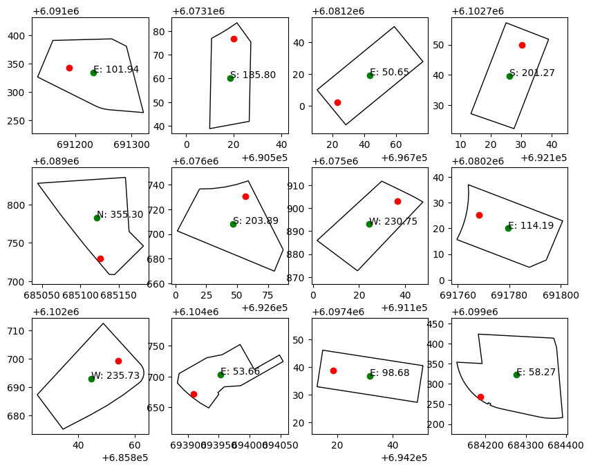

Determining cardinal direction of land parcels
We’re looking to move to Canberra and so, have begun searching for a home to purchase. One of our requirements is a property with a north-facing backyard.
Due to axial tilt, properties with a north facing backyard receive more sunlight and are therefore better for growing.
Online real estate listings, if they contain any orientation information at all, usually do so as a compass rose on a floorplan. This isn’t very accessible to people or computers.
So, this lead me to the question:
Is there a way to programmatically determine block orientation?
Using open data, we can at least approximate the orientation of a land parcel
Solution
Data
Code
import geopandas as gpd
import pandas as pd
Load data files
addresses_gdf = gpd.read_file(
"data/ACTGOV_ADDRESSES_-460557821198955827.gpkg", engine="pyogrio"
)
blocks_gdf = gpd.read_file(
"data/ACTGOV_BLOCK_CURRENT_3920010383705203761.gpkg", engine="pyogrio"
)
Setup geometry columns
addresses_gdf.set_geometry('geometry', crs="EPSG:7855", inplace=True)
blocks_gdf.set_geometry('geometry', crs="EPSG:7855", inplace=True)
Drop unwanted columns
addresses_gdf.drop([
'GlobalID', 'CRC_ID'
], axis=1, inplace=True)
blocks_gdf.drop([
'VOLUME_FOLIO', 'LAST_UPDATE', 'DEPOSITED_PLAN_NO', 'AP_NUMBER', 'BLOCK_TYPE_ID', 'DISTRICT_CODE', 'DIVISION_CODE', 'GlobalID'
], axis=1, inplace=True)
# Drop empty fields
blocks_gdf.drop([
'STRATUM_LOWEST_LEVEL','STRATUM_HIGHEST_LEVEL', 'GROUND_LEVEL', 'BLOCK_KEY',
'STRATUM_DATUM_ID', 'SENSITIVE_FLAG', 'TRANSITION_FLAG', 'WATER_FLAG'
], axis=1, inplace=True)
Normalise column names for the join
blocks_gdf.rename({
'BLOCK_NUMBER': 'BLOCK',
'SECTION_NUMBER': 'SECTION',
'DIVISION_NAME': 'DIVISION',
'DISTRICT_NAME': 'DISTRICT'
}, axis=1, inplace=True)
Join dataframes
merged_gdf = addresses_gdf.merge(blocks_gdf, on=['DIVISION', 'DISTRICT', 'SECTION', 'BLOCK'])
Rename data columns
merged_gdf.rename({
'geometry_x': 'address_geom',
'geometry_y': 'block_geom'
}, axis=1, inplace=True)
Drop any rows without an address
I.e. any land parcels without an address
merged_gdf.dropna(subset='ADDRESSES', inplace=True)
Calculate direction of backyard
-
Calculate the angle between two points:
- The coordinate for the street address
- The center of the land parcel geometry
-
Convert radians to degrees
-
As atan2 is a cartestian function, the angle is calculated counter-clockwise from the x-axis. To convert to cardinal coordinates:
- Multiply by -1 to invert the rotation
- Add 270 to rotate to ‘0 up’
- Normalise to
0 >= angle < 360by dividing by 360 and keeping the remainder
import math
def calc_direction(row):
radian = math.atan2(
row['address_geom'].y - row['block_centroid'].y,
row['address_geom'].x - row['block_centroid'].x
)
degrees = math.degrees(radian)
direction = (degrees * -1 + 270) % 360
return direction
merged_gdf['block_centroid'] = merged_gdf['block_geom'].apply(lambda geom: geom.centroid)
merged_gdf['facing'] = merged_gdf.apply(calc_direction, axis=1)
Add a convenience label
For this application, anything between North-West and North-East is considered North facing
def direction(facing):
if facing > 315 or facing <= 45:
return 'N'
elif facing > 45 and facing <= 135:
return 'E'
elif facing > 135 and facing <= 225:
return 'S'
elif facing > 225 and facing <= 315:
return 'W'
merged_gdf['direction'] = merged_gdf['facing'].apply(direction)
import matplotlib.pyplot as plt
rows = 3
cols = 4
plot_base = 10
sample_df = merged_gdf.sample(rows * cols)
sample_gdf = gpd.GeoDataFrame(sample_df)
# create figure and axes for Matplotlib
fig, ax = plt.subplots(rows, cols, figsize=(plot_base, math.ceil(plot_base * (rows / cols))))
for i in range(0 , sample_gdf.shape[0]):
subax = ax[math.floor(i / cols), i % cols]
row = sample_gdf[i:i+1].copy().reset_index()
subax.set_box_aspect(1)
row.set_geometry('block_geom', inplace=True)
row.plot(ax=subax, color="white", edgecolor='black')
row.set_geometry('address_geom', inplace=True)
row.plot(ax=subax, color='red')
row.set_geometry('block_centroid', inplace=True)
row.plot(ax=subax, color='green')
subax.annotate(
"%s: %.2f" % (row.at[0, 'direction'], row.at[0, 'facing']),
xy=(row['block_centroid'].x, row['block_centroid'].y)
)

Known issues
- Corner blocks
- Odd shaped blocks